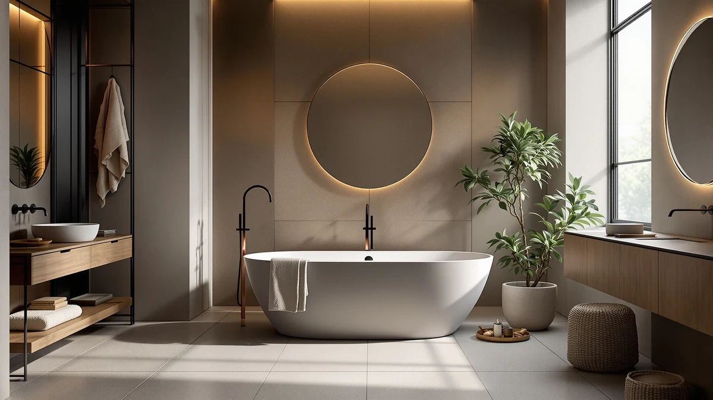

Best Freestanding Tub for Two (2026)
Prices and picks verified as of August 2026. Independent, reader-supported reviews.


Quick Answer
We compared seven acrylic freestanding tubs built between 59 and 67 inches, and among them, the Freestanding Bathtub 59 inch Acrylic from EliteEdge is the best freestanding tub for two most couples should buy, thanks to its compact footprint and the lowest price in the group. If you and your partner want more room to stretch out or submerge deeper, the 67-inch IDEALHOUSE Extra-Deep model offers a fuller two-person soak for $626.98.
Our pick: Freestanding Bathtub 59 inch Acrylic, $449.99 Check Price on Amazon
Bottom line: our top pick is the Freestanding Bathtub 59 inch Acrylic Free Standing Tub 59 Inch at $706.69. The best budget option is the 67'' Acrylic Freestanding Bathtub at $631.27.
Things to Know Before You Buy
- Length varies from 59 to 67 inches in this comparison, and that gap matters more for two people sharing a soak than it does for one bather alone.
- Two of the 67-inch tubs here add extra basin depth, which lets both of you submerge further without water spilling over the rim.
- All seven tubs are acrylic, so material is not the deciding factor. The real tradeoffs come down to length, depth, and price.
- A longer length does not guarantee a fit in your bathroom. Measure your floor space and door clearance before you assume a 67-inch tub will work.
The best freestanding tub for two doesn't have to be the longest or most expensive tub on the list, and after comparing seven acrylic freestanding tubs built between 59 and 67 inches, we found real tradeoffs between price, length, and basin depth. EliteEdge's 59-inch acrylic tub costs $449.99, the lowest price in this group, and still gives two people enough room to share a bath without a larger footprint. Couples who want more space to stretch out or a deeper basin to submerge further will pay more, and we break down exactly how much more below.
Length is not the only variable that matters for two people bathing together. Two of the seven tubs in this comparison, both from IDEALHOUSE, add extra depth on top of a 67-inch length, letting both bathers sit lower in the water. WOODBRIDGE and Garvee also sell 67-inch tubs at standard depth, so the extra room comes at different price points depending on which brand and depth combination you choose. We priced every option so you can weigh length against depth against cost before you decide.
You will find our full breakdown of all seven tubs below, along with a comparison table, honest pros and cons for each model, and the reasoning behind our top pick. If your bathroom can fit a 67-inch tub and your budget allows it, one of the longer or deeper models may suit two bathers better than our overall pick. If space or price is tight, the compact EliteEdge tub remains the strongest starting point.
Why You Should Trust Us
Best Freestanding Bathtubs has covered bathroom fixtures since the site launched, and every roundup follows the same process: we start from real product listings, not marketing copy, and we verify prices, dimensions, and brand claims against each retailer's own data before publishing. Ilane Tall, our home and bath expert, reviews every guide before it goes live and has spent years researching bathroom layouts sized for two bathers. When we set out to find the best freestanding tub for two, we treated length and depth as separate variables instead of assuming a longer tub automatically means more room, which is why every pick below explains what you gain and give up at each price point.
How We Picked
We started with every acrylic freestanding tub in our product database that measures between 59 and 67 inches, a range most US bathrooms can fit without a full plumbing overhaul and long enough to accommodate two adults for a shared soak. From there, we separated the tubs by two variables that matter most for bathing with a partner: overall length and basin depth. A longer tub gives both of you more room to stretch your legs, while a deeper basin lets you sit lower without water spilling over the rim. We also weighed brand history, noting that WOODBRIDGE carries a longer track record in bath fixtures than newer entrants like Garvee and GarveeLife. Tubs that charged a premium price without extra length, extra depth, or a stronger brand behind them dropped in our ranking of the best freestanding tub for two.
How We Compared
We do not run a physical testing lab, so we built a side-by-side comparison instead. For each of the seven tubs, we recorded the manufacturer-listed length, depth designation, and price, then compared those figures across the lineup to see which models gave two bathers the most room for the money. We cross-checked every price and dimension against each retailer's own listing before publishing to catch inconsistencies. That process is how the EliteEdge tub separated itself as the best freestanding tub for two on price and footprint, and how we ranked the remaining six tubs by how much extra length or depth you get for each dollar spent above that baseline.
Our Picks

Freestanding Bathtub 59 inch Acrylic
What we like
- Lowest price of the seven tubs we compared, at $449.99
- 59-inch length still leaves room for two people in a standard bathroom alcove
- Acrylic shell keeps the tub light enough for a straightforward installation
Flaws but not dealbreakers
- Shorter than the 67-inch options, so taller couples may feel cramped
- No extra-deep basin option like two of the IDEALHOUSE models
| Material | — |
| Size | 59 Inch |
EliteEdge's 59-inch acrylic tub earns the top spot in our search for the best freestanding tub for two because it delivers a shared soak at the lowest price in this comparison. At $449.99, it costs less than every other tub we looked at, and its 59-inch length fits the same floor space as many standard alcove tubs, so swapping it in usually does not force a larger remodel. Two people of average height can sit across from each other without their legs fully extended, which covers most couples looking for a compact, budget-friendly upgrade.
This tub will not satisfy a couple who wants to stretch out fully or submerge past the shoulders, since it lacks the extra length and depth that some pricier models in this lineup add. For a household with a smaller bathroom or a tighter budget, though, the EliteEdge tub answers the core question, whether two people can comfortably share this tub, with a clear yes, and that combination of price and footprint is why we rank it as the best freestanding tub for two in this comparison.

67'' Acrylic Freestanding Bathtub Extra-Deep
What we like
- Extra-deep basin holds more water than the standard-depth tubs in this lineup
- 67-inch length gives two bathers more room to stretch out than the 59-inch options
- Deep, roomy design suits couples who bathe together often
Flaws but not dealbreakers
- Costs $177 more than our top pick for the added length and depth
- Needs more floor clearance than the 59-inch tubs in this comparison
| Material | — |
| Size | 67 Inch |
The 67-inch Acrylic Freestanding Bathtub Extra-Deep trades some of our top pick's value for a fuller two-person soak. IDEALHOUSE built extra depth into this 67-inch tub, so both bathers can sit lower in the water than a standard-depth model allows, and the additional length gives you more room to stretch out than the 59-inch tubs in this comparison. At $626.98, it costs $177 more than the EliteEdge model, and that price buys a noticeably different bathing experience rather than the same tub in a bigger size.
The tradeoff only makes sense if depth and length both matter more to you than minimizing cost. Compared with the other 67-inch tubs we looked at, though, it is not the most expensive way to get that extra room. If a fuller soak for two is worth paying above our budget pick, this tub gives you both extra inches and extra depth in one model instead of forcing you to choose.

67" Acrylic Freestanding Bathtub Deep
What we like
- Deep basin and 67-inch length offer the most room of any tub we compared
- Acrylic build from the same maker as our extra-deep pick above
- Sturdy construction suited to two bathers who want a substantial, high-capacity tub
Flaws but not dealbreakers
- At $808.48, it costs nearly 80 percent more than our top pick
- No finish or feature upgrade beyond depth and length to offset the price gap
| Material | — |
| Size | 67 inch |
IDEALHOUSE's deep 67-inch tub is the largest-capacity model in this comparison, and it carries the largest price tag to match. At $808.48, it costs nearly 80 percent more than our top pick, and that premium buys the combination of full 67-inch length and a deep basin, which together give two bathers more room to settle in than any other tub here. Taller or larger-bodied couples get the most benefit from that extra space.
None of that comes at a price that fits a tight budget, and couples focused on value will find a better balance in almost every other tub in this lineup. We would only point a household toward this tub if you have already decided that maximum room for two matters more than cost, and your bathroom has the floor space and plumbing rough-in to support it. For most couples comparing tubs on the best freestanding tub for two, this is the one to consider last, not first.

WOODBRIDGE 67" Acrylic Freestanding Bathtub
What we like
- WOODBRIDGE is a more established name in bath fixtures than most brands in this comparison
- 67-inch length matches the larger IDEALHOUSE models for two-person room
- Priced over $100 below the most expensive tub in this lineup
Flaws but not dealbreakers
- Costs $249 more than our top pick for the same acrylic material
- Standard depth, not the extra-deep basin that two of the IDEALHOUSE models add
| Material | — |
| Size | 67 Inch |
WOODBRIDGE has a longer track record in the bath fixture market than most of the brands in this comparison, and its 67-inch acrylic freestanding tub prices that reputation at $699.00. That is $249 more than our top pick, but it undercuts the priciest 67-inch tub in this lineup by over $100 for a comparable length. Two bathers get the same extra room as the IDEALHOUSE 67-inch models, backed by a manufacturer with a longer history in the category.
This tub sticks to standard depth rather than the extra-deep basin IDEALHOUSE offers, so it will not give you quite the same fuller soak. For a couple who wants the reassurance of a recognized manufacturer alongside the space benefits of a longer tub, though, WOODBRIDGE's model strikes a fair balance between brand name and two-person room, even if it is not the deepest or cheapest way to get there.

59 Inch Acrylic Freestanding Bathtub
What we like
- Same 59-inch footprint as our top pick, so it fits the same bathroom alcoves
- IDEALHOUSE's acrylic build matches the construction of its larger 67-inch models
- Still cheaper in total price than every 67-inch tub in this comparison
Flaws but not dealbreakers
- Costs $90 more than our top pick for the identical 59-inch footprint
- No added length or depth to justify the higher price for two bathers
| Material | — |
| Size | 59 Inch |
This 59-inch tub gives couples who prefer IDEALHOUSE's build a compact option without the extra floor space the brand's 67-inch models need. It shares the same acrylic construction as IDEALHOUSE's larger tubs, so anyone who wants to stay with the brand can do so even in a smaller bathroom. At $539.99, it costs $90 more than our top pick for essentially the same 59-inch footprint and the same amount of room for two.
That extra $90 does not buy more length, more depth, or more room to share the tub with a partner. We rank it as an alternative rather than a top pick for that reason: two people get the identical practical space from the less expensive EliteEdge model. It earns a spot here mainly for couples with a specific reason to choose IDEALHOUSE, such as matching an existing fixture already in the home.

67 Inch Acrylic Freestanding Bathtub
What we like
- Cheapest 67-inch tub in this comparison, at $552.48
- Only about $102 more than our top pick despite eight extra inches of length
- Extra room to stretch out for two bathers without a steep price jump
Flaws but not dealbreakers
- Garvee is a newer name in bath fixtures with a shorter track record than WOODBRIDGE
- Standard depth only, not the extra-deep basin some IDEALHOUSE models offer
| Material | — |
| Size | 67 Inch |
Garvee's 67-inch acrylic freestanding tub answers a specific question for couples: what if you need the extra length of a 67-inch tub without paying $600 or more for it? At $552.48, it undercuts every other 67-inch model we compared, and it costs only about $102 more than our top pick for eight additional inches of shared bathing space.
The tradeoff is brand recognition. Garvee has less history in the bath fixture space than WOODBRIDGE, so couples who prioritize an established manufacturer may want to pay more for that assurance. For two people who have measured the bathroom, confirmed a 67-inch tub fits, and want to stay close to our top pick's price, this is the strongest option among the longer tubs we compared, and arguably the best freestanding tub for two if 59 inches feels too tight for your household.

59 Inch Freestanding Bathtubs White
What we like
- Bright white finish stands out from the other 59-inch tubs in this comparison
- Still cheaper in total dollars than the priciest 67-inch tub we compared
- Acrylic construction keeps installation straightforward, like the rest of this lineup
Flaws but not dealbreakers
- At $683.78, it costs about $234 more than our top pick for a shorter tub
- No extra length or depth to give two bathers more room for that price
| Material | — |
| Size | 59 Inch |
GarveeLife's 59-inch tub is the only tub in this comparison finished in white rather than the standard glossy acrylic look, and that finish comes at a cost. At $683.78, it is priced closer to the 67-inch tubs in this lineup than to the other 59-inch models, despite offering the same shorter footprint as our top pick. Two bathers get the same 59-inch space as the EliteEdge tub, dressed in a different finish.
If a white finish is a specific requirement for your bathroom's color scheme, this tub delivers on that one point, and it still costs less in total dollars than the priciest 67-inch tub in this roundup. But if finish color is not a priority, the math does not favor this tub: you could get eight more inches of shared bathing space from the Garvee 67-inch model for less money, or the same 59-inch footprint from our top pick for $234 less. We would not call this the best freestanding tub for two unless the white finish is a non-negotiable feature.
Quick Comparison
| Product | Material | Price | Rating | Best for | Get it |
|---|---|---|---|---|---|
| Freestanding Bathtub 59 inch Acrylic | — | $449.99 | 4 | Best freestanding tub for two overall | View on Amazon → |
| 67'' Acrylic Freestanding Bathtub Extra-Deep | — | $626.98 | 4 | Best for a deeper soak | View on Amazon → |
| 67" Acrylic Freestanding Bathtub Deep | — | $808.48 | 4 | Roomiest option, highest price | View on Amazon → |
| WOODBRIDGE 67" Acrylic Freestanding Bathtub | — | $699.00 | 4 | Best for brand reputation | View on Amazon → |
| 59 Inch Acrylic Freestanding Bathtub | — | $539.99 | 4 | Best 59-inch alternative | View on Amazon → |
| 67 Inch Acrylic Freestanding Bathtub | — | $552.48 | 4 | Best value at 67 inches | View on Amazon → |
| 59 Inch Freestanding Bathtubs White | — | $683.78 | 4 | Best for a white finish | View on Amazon → |
The Competition
Six other tubs made this list without unseating the Freestanding Bathtub 59 inch Acrylic as the best freestanding tub for two overall. The two IDEALHOUSE 67-inch tubs, the Extra-Deep at $626.98 and the Deep at $808.48, both offer more room and a deeper basin than our top pick, but neither undercuts it on price, and the $808.48 model is the most expensive tub we compared. The WOODBRIDGE 67-inch tub at $699.00 brings a more established brand name to the same length category, though it costs $249 more than our top pick for a comparable footprint.
The 59 Inch Acrylic Freestanding Bathtub from IDEALHOUSE and the 59 Inch Freestanding Bathtubs White from GarveeLife both match our top pick's compact footprint, but each costs more, $539.99 and $683.78 respectively, and neither adds length or depth to earn that premium. The Garvee 67 Inch Acrylic Freestanding Bathtub at $552.48 came closest to unseating our pick: it is the cheapest 67-inch tub we found, and for a couple with the bathroom space for the longer length, it deserves serious consideration. Even so, on price and footprint together, the EliteEdge tub remains the best freestanding tub for two in this comparison.
Frequently Asked Questions
What is the best freestanding tub for two?
Based on our comparison of seven acrylic freestanding tubs, the Freestanding Bathtub 59 inch Acrylic from EliteEdge is the best freestanding tub for two for most couples. At $449.99, it is the least expensive tub in this lineup, and its 59-inch length still leaves enough room for two people to share a soak without paying for a longer, deeper model.
Do two people need a longer or deeper tub to bathe together?
Not always, but it helps. The 67-inch IDEALHOUSE Extra-Deep and Deep tubs in this comparison add both length and basin depth, giving two bathers more room to stretch out and submerge further than the 59-inch models do. That extra room costs $177 to $358 more than our top pick, so it makes the most sense for taller couples or bathrooms with the floor space to spare.
Is a deep tub better than a long tub for bathing with a partner?
It depends on what you want from the soak. A deeper basin, like the one on the IDEALHOUSE Extra-Deep model, lets both of you sit lower in more water. A longer tub, like the 67-inch Garvee model, gives you more room to stretch your legs. Few tubs in our comparison offer both at a low price, so you will likely trade one benefit for the other.